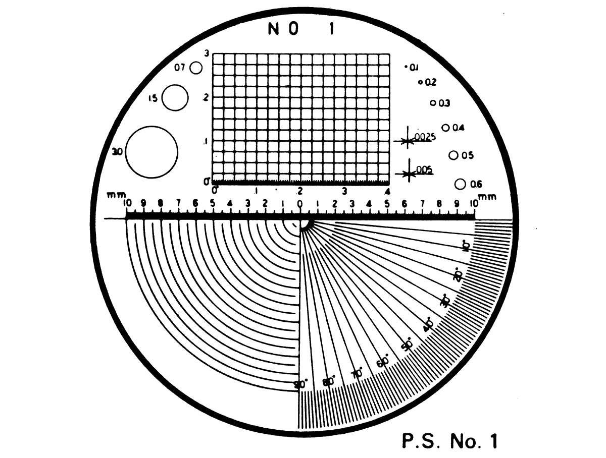
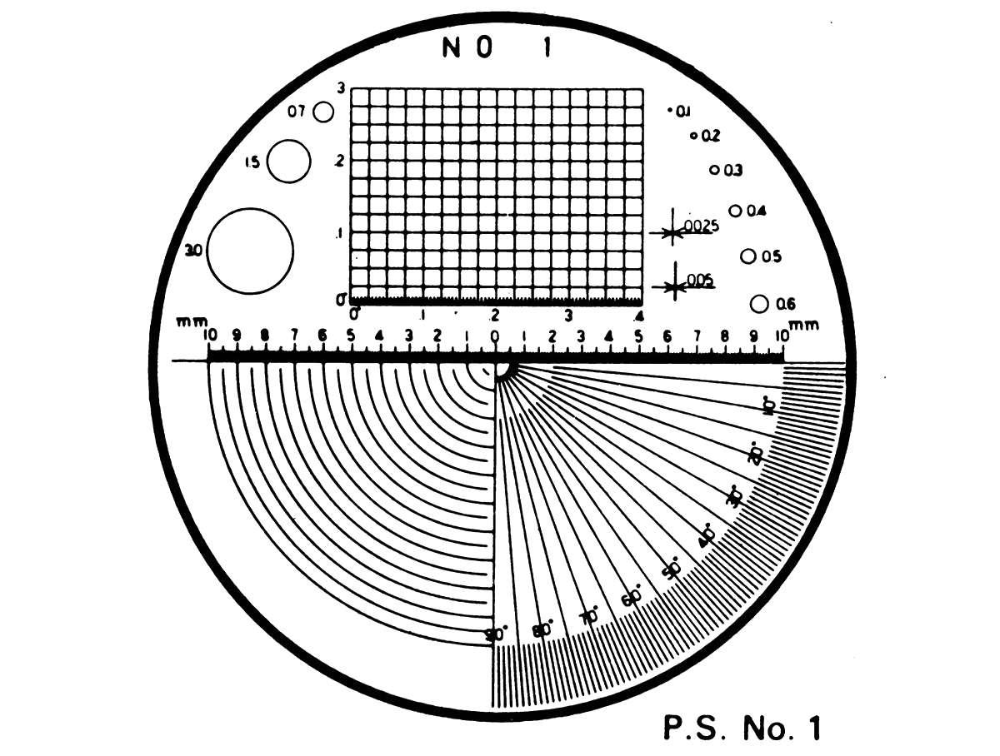

"NO SOAP, RADIO"
CURRENTLY BROADCASTING ON: A.M. 1660 kHz
IN or AROUND: SURFSIDE BEACH, SC, U.S.A.
CURRENTLY BROADCASTING ON: A.M. 1660 kHz
IN or AROUND: SURFSIDE BEACH, SC, U.S.A.
studio (at) no-soap.net
"HERE, THERE, AND EVERYWHERE"
Reports
NO SOAP, RADIO is the broadcasting division of GOOD BOY PROJECTS
FEATURED PROGRAMMING:
 "INFINITE START UP"
"INFINITE START UP"
Monday at 9 a.m.
Beginning 11-01-2025
"INFINITE START UP"Monday at 9 a.m.
Beginning 11-01-2025
Systems, in one sense, are devices that take input and produce an output. A system can be thought to operate on the input to produce the output. The output is related to the input by a certain relationship known as the system response. The system response usually can be modeled with a mathematical relationship between the system input and the system output.
TODAY'S SCHEDULE
ALL TIMES EST
"Standard Rotation" unless otherwise stated
ALL TIMES EST
LOADING...
"Standard Rotation" unless otherwise stated
FOR FIELD TESTING ONLY:

PLEASE SUBMIT TEST RESULTS TO STUDIO (AT) NO-SOAP.NET FOR VERIFICATION

PLEASE SUBMIT TEST RESULTS TO STUDIO (AT) NO-SOAP.NET FOR VERIFICATION